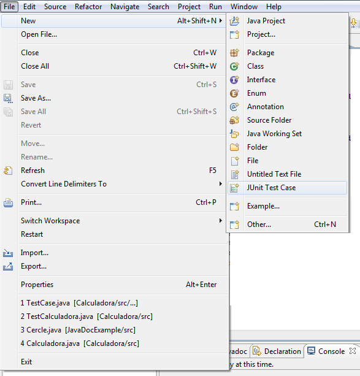
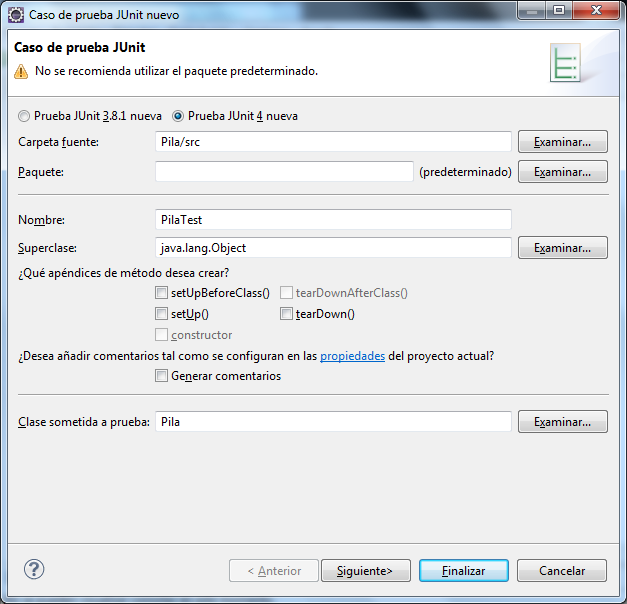
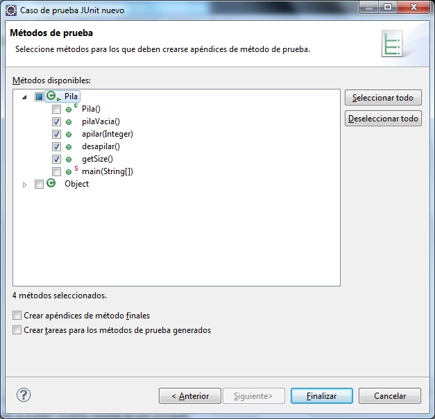
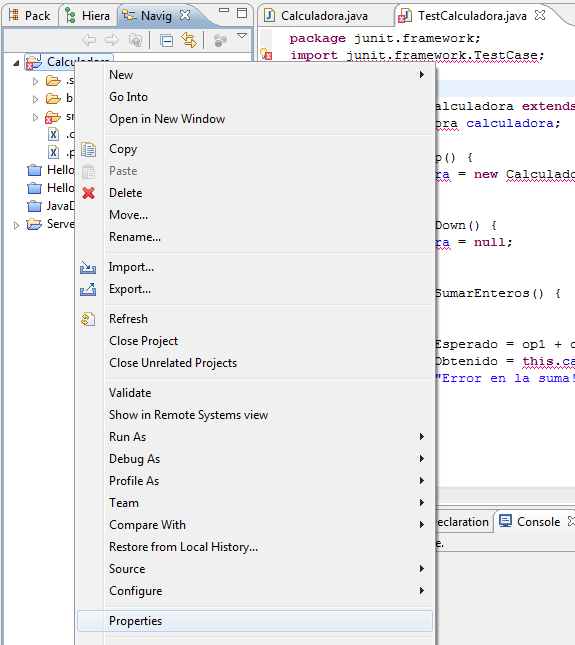
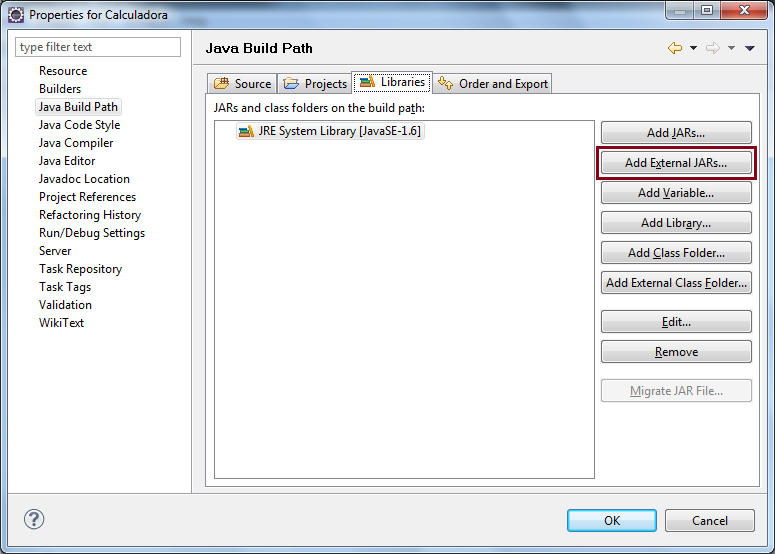
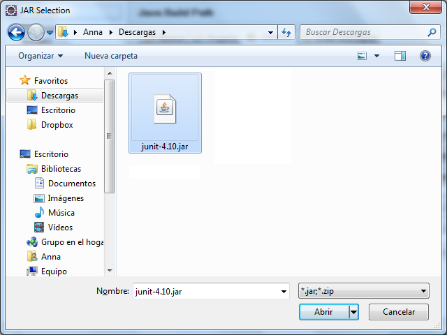
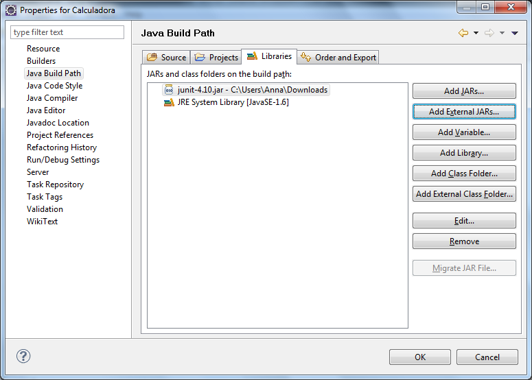
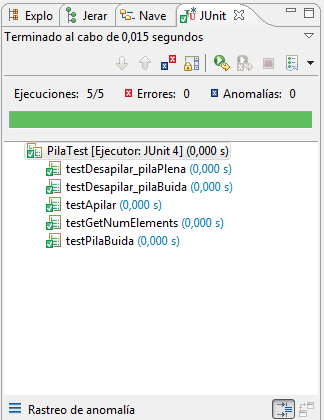

1. Crear un projecte que implementi una pila:
import java.util.Vector;
public class Pila {
private int mida;
private Vector<Integer> pila;
public Pila() {
super();
pila = new Vector<Integer>();
mida = 0;
}
public boolean pilaBuida () {
if (mida==0) {
return true;
}
return false;
}
pila.add(mida, o);
mida++;
}
try {
if(pilaBuida())
throw new ErrorPilaVacia();
else {
return pila.get(--mida);
}
} catch(ErrorPilaVacia error) {
System.
out.
println("ERROR: la pila està buida"); return null;
}
}
public int getNumElements() {
return mida;
}
@SuppressWarnings("serial")
public ErrorPilaVacia() {
super();
}
}
}
2. Codificar les proves unitàries amb JUnit, que permetin validar el correcte funcionament de la pila:
En primer lloc, cal descarregar una versió de JUnit.
A partir del projecte Pila es podrà incloure una nova classe de test que anomenarem PilaTest.
La classe de proves s’ha de crear en el mateix paquet on es troba la nostra classe. Això ens permetrà tenir accés a les variables declarades sense identificador d’accés, sense necessitat d’un mètode altern com un setter.
A continuació es mostra com començar la utilització de JUnit creant un JUnit Test Case.

A continuació es pot observar el diàleg que s’haurà de configurar per crear les proves, indicant la carpeta amb què es treballarà, el nom de les proves i la classe que se sotmetrà a les proves.

A continuació es podrà seleccionar quins mètodes de la Classe Pila es voldran verificar.

Automàticament s’haurà inclòs en el projecte la referència a la llibreria.
En el cas que s’hagi d’especificar manualment la referència, caldrà que s’afegeixi la llibreria de JUnit al Build Path. Caldrà clicar amb el botó dret a sobre del projecte i seleccionar sobre el menú contextual l’opció Properties. Es pot observar a continuació:

Sobre el Java Build Path, a la pestanya Libraries, caldrà afegir fitxer JAR externs (figura 5).

Cal descarregar de la llibreria http://sourceforge.net/projects/junit/files/junit/ el fitxer de JUnit, que, per defecte, es guarda a la carpeta de descàrregues. A continuació es pot veure com afegir la llibreria JUnit-4.10.jar al nostre projecte.

A continuació s’observa el fitxer una vegada afegit a les llibreries.

En funció de la informació proporcionada en l’assistent de creació de la classe CalculadoraTest, automàticament es generarà l’estructura de les proves que s’hauran d’implementar.
Algunes de les proves que podria contenir la calculadora podrien ser les que es mostren a continuació:
import static org.junit.Assert.*;
import org.junit.Before;
import org.junit.Test;
public class PilaTest {
Pila pila_plena;
Pila pila_buida;
@Before
public void setUp() {
pila_buida = new Pila();
pila_plena = new Pila ();
pila_plena.apilar(1);
pila_plena.apilar(2);
pila_plena.apilar(3);
pila_plena.apilar(4);
}
@Test
public void testGetNumElements() {
int valor = 0;
valor=pila_plena.getNumElements();
assertEquals(pila_plena.getNumElements(),4);
}
@Test
public void testPilaBuida() {
assertEquals(pila_buida.getNumElements(),0);
}
@Test
public void testApilar() {
int mida = pila_plena.getNumElements();
pila_plena.apilar(i);
assertEquals(pila_plena.getNumElements(),mida+1);
}
@Test
public void testDesapilar_pilaPlena() {
int mida = pila_plena.getNumElements();
assertEquals(pila_plena.getNumElements(),mida-1);
}
@Test
public void testDesapilar_pilaBuida() {
int mida = pila_buida.getNumElements();
assertEquals (i, null);
assertEquals(pila_buida.getNumElements(),mida);
}
}
Arribats a aquest punt, queda pendent l’execució del test. A continuació s’indica com fer-ho:
A continuació es mostra el resultat de l’execució automatitzada de les proves unitàries indicant si la prova ha estat superada correctament o si s’ha produït algun error.
